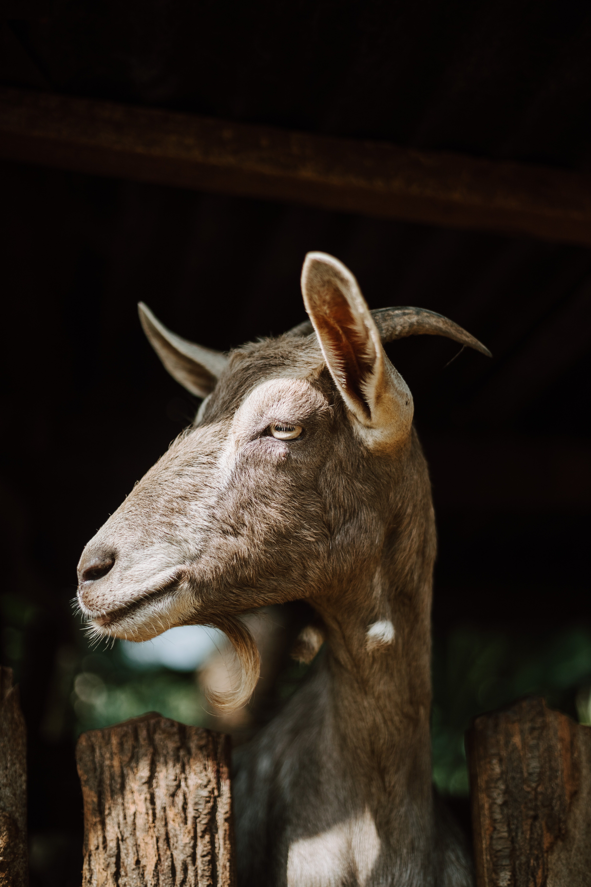

Capricorn
EARTH SIGN
SYMBOL : THE GOAT

Dear Capricorn,
A Capricorn is a grounded individual, and his or her determination is unchallengable. Capricorns usually like to be disciplined, and can be tradionalists although pertaining to comtemporary matters as well. They are independent and very responsible, hence making them great leaders, and great at being the head of family. Being an earth sign, they like to balance all aspects of life but being Healthy is a great deal to them than other signs.All the Capricorns, I know are unusually fond of children. Capricorns usually are fashionable. The unagreeable trait of Capricorns is that they can be very stubborn in their perspective and also like to impose their views and values on others. Most also enjoy materialistic means a little too much at times. Great examples of Capricorns include Michelle Obama,V from BTS, Eddie Redmayne and Martin Luther King Jr .
Zodiac Signs Homepage
Aquarius